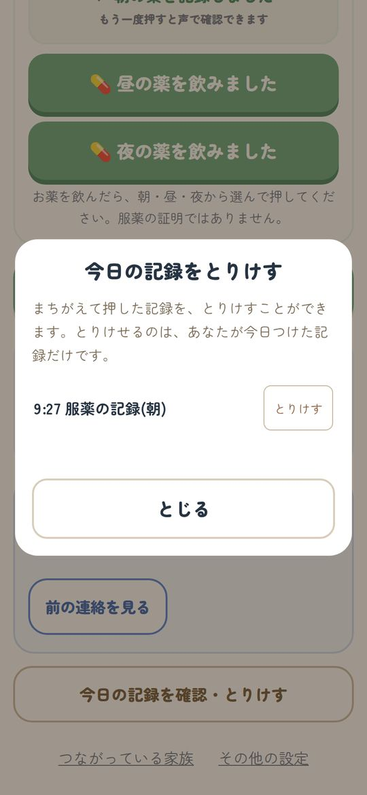
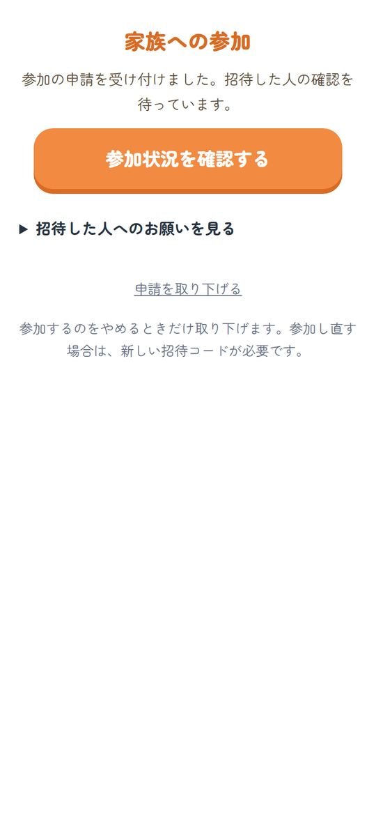
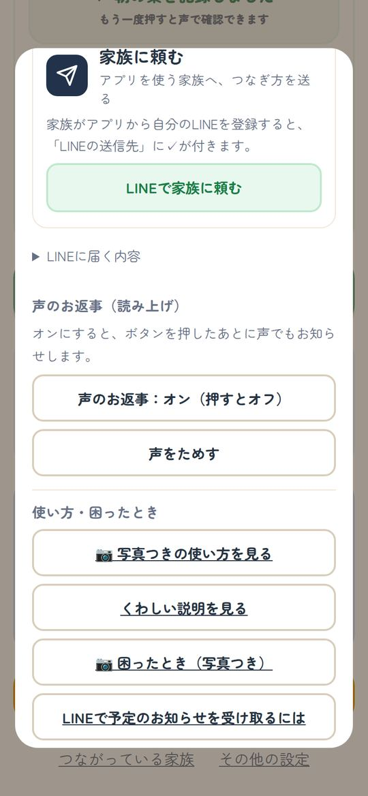
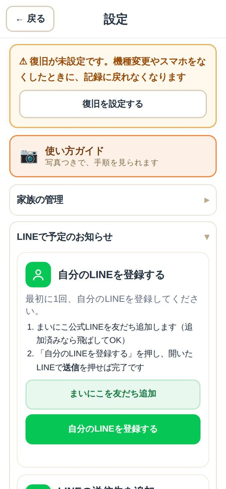
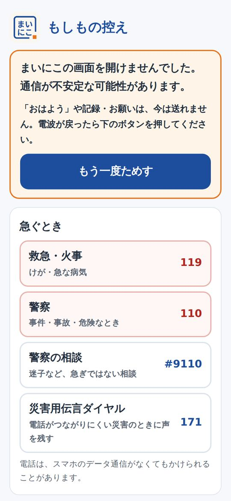
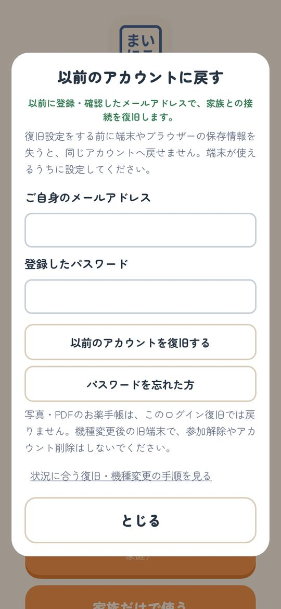

困ったとき
こまったときは、
ここを見てください。
よくある困りごとと、直し方です。
使い方は使い方ガイドにあります。
急ぐとき・命に関わるときは、119番・110番へ。まいにこは緊急通報の代わりではありません。
- 押しまちがえた
- 家族の記録が見えない（承認待ちのまま）
- 声が聞こえない
- LINEで予定のお知らせが届かない
- 電波がないとき
- スマホを替えた・なくした
- 保存・送信が進まない
- ホーム画面に追加できない
- 家族の誰も入れなくなった
LINEの中では印刷できないことがあります。右上の「…」などから「ブラウザで開く」を選んで、もう一度押してください。
1押しまちがえた
ご本人の画面の下にある 今日の記録を確認・とりけす を押します。とりけしたい記録の とりけす を押せば消えます。
ポイント とりけせるのは、自分が今日つけた記録だけです。

2家族の記録が見えない（承認待ちのまま）
参加したばかりの人は「承認待ち」です。招待した家族に、ホームの 参加を認める を押してもらってください。
ポイント 招待コードは1回だけ使えます。取り下げたときは、新しいコードをもらってください。

3声が聞こえない
スマホの音量を上げます。ご本人の その他の設定 の「声のお返事」がオンかを確かめ、声をためす を押します。
ポイント 声が出なくても、記録は保存されています。結果は画面で確かめられます。

4LINEで予定のお知らせが届かない
- 「設定」→「LINEで予定のお知らせ」で、自分のLINEを登録しているか
- まいにこ公式LINEをブロックしていないか
- 予定に「LINEで知らせる日時」を入れているか
ポイント お知らせは15分ほど遅れることがあります。

5電波がないとき
電波がないと、まいにこは開けません。かわりに 「もしもの控え」 が開き、119番などの番号や、連絡先・予定・お薬を見られます。
ポイント 「おはよう」などは、電波が戻ってから押してください。

6スマホを替えた・なくした
新しいスマホでまいにこを開き、以前のアカウントを復旧する から、復旧で設定したメールとパスワードを入れます。
なくしたスマホは、「設定」→「機種変更・アカウントの復旧」→ ほかのスマホを止める で使えなくできます。
ポイント 復旧の設定をしていないと戻れません。いまのうちに設定してください（やり方）。

7保存・送信が進まない
- 「送信しています」の間は、続けて押さずに待ちます
- 電波のよいところで、開き直します
- データの消去や、入れ直しはしないでください（記録に戻れなくなることがあります）
8ホーム画面に追加できない
- iPhone：Safariで開き、下の共有ボタン（□に↑）→「ホーム画面に追加」
- LINEの中で開いたとき：右下のコンパスの印から、Safariで開き直します
9家族の誰も入れなくなった
運営者に相談してください。同じ家庭の家族に確認してから対応します。
問い合わせ：pocham4173@gmail.com
?
それでも直らないとき
どんな画面で、どのボタンを押したら、どうなったかを書いて、メールで送ってください。
問い合わせ：pocham4173@gmail.com（お返事に数日かかることがあります）
ポイント 名前・パスワード・招待コード・病気のことは書かないでください。書き方の見本は状況メモにあります。